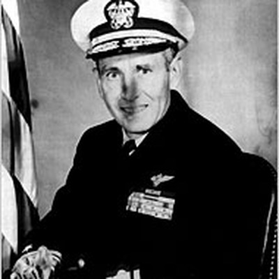
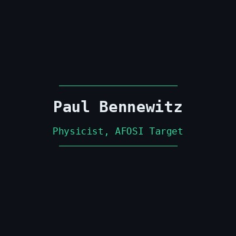

The Pipeline
Across nine wars — for your technology, your money, your history, your mind, your energy, your information, your body, your sky, and your faith — the pattern repeats. This one is different. Mind Wars showed what they suppressed — remote viewing defunded, psychedelic research criminalized, consciousness science ridiculed. The Pipeline shows what they put in its place. The CIA distributed LSD through MKULTRA. The military ran remote viewing for 23 years, then retired veterans launched commercial courses. A UN-associated NGO was originally called Lucifer Publishing Company. The New Age movement has a supply chain — and it starts in Langley.
The Empty Pew
Every empire needs a church. Not for God — for compliance. For two thousand years, organized religion performed the same function as a border wall: it kept the inner world mapped, surveilled, and taxed. You wanted to talk to the divine? You went through a priest. You wanted forgiveness? You paid for it. You wanted revelation? You read the one book they hadn’t burned.
Then the 20th century cracked the wall. Two world wars. The Holocaust. Vietnam on television. Exposed pedophilia. The pews emptied. People didn’t stop seeking. They stopped believing the building.
That should have been liberation. It was an opening.
When a hundred million people walk out the front door of one cage, someone is already building the next one on the sidewalk. They just make sure it doesn’t look like a cage. They make sure it looks like freedom.
The Marketplace
The question was never whether people would keep seeking. The question was who would be standing at the exit.
This is their product catalog.
What replaced institutional religion didn’t come from nowhere.
The pews emptied. The seekers scattered. And someone was waiting at the exit with a product catalog. This scroll traces the supply chain.
The Acid Sacrament
The CIA didn’t just study LSD. They distributed it.
Project MKULTRA ran from 1953 to 1973. 149+ sub-projects across 80+ institutions — universities, hospitals, prisons, pharmaceutical companies. Budget: $10 million+ confirmed in surviving financial records (estimated up to $25 million total across related programs). Director: Sidney Gottlieb, who launched MKULTRA in 1953 as Chief of the Chemical Division of the CIA’s Technical Services Staff (TSS) and later led the renamed Technical Services Division (TSD, 1966–1973). In 1973, Director of Central Intelligence (DCI) Richard Helms authorized Gottlieb’s order to destroy the program’s files. Twenty thousand pages survived by accident — misfiled in a financial records office and discovered via FOIA request in 1977.
The LSD Pipeline
The substance that defined the counterculture entered through a CIA supply chain. This is not inference. It is documented in the surviving financial records.
R. Gordon Wasson — Vice President of J.P. Morgan — published the first mainstream Western account of psilocybin mushrooms in Life magazine on May 13, 1957. His research was funded under MKULTRA Subproject 58. A CIA chemist named James Moore accompanied Wasson on the 1956 expedition to Oaxaca, Mexico, to obtain mushroom samples for the Agency.
Swiss pharma → CIA mind control division → university researchers → MKULTRA test subject → counterculture movement → cultural icon → mass distribution. Every link documented.
The Canyon
While the CIA was distributing LSD through academic channels, a remarkable cluster of musicians emerged from a single neighborhood in Los Angeles — Laurel Canyon. Their family backgrounds tell a story that the music histories leave out.

COINTELPRO: The Documented Infiltration
You don’t suppress a sacrament. You mass-produce it without the ceremony, flood the zone, and let the culture do the discrediting for you. The acid opened a door. Millions walked through. On the other side, someone had already built the gift shop.
The Gift Shop
The Human Potential Movement didn’t start in a commune. It started at Stanford Research Institute — the same facility running classified remote viewing for the CIA.
SRI and the Stargate Program
When Stargate was declassified and shut down in 1995, the trained military remote viewers did something predictable. They started selling courses.
Ed Dames, Paul H. Smith, Lyn Buchanan, David Morehouse, Joseph McMoneagle — retired program veterans went on to offer commercial remote viewing training and books (under names like Ed Dames’s “Technical Remote Viewing” and “Controlled Remote Viewing”). Art Bell’s Coast to Coast AM was the primary broadcast vector. Classified military methodology became a consumer product. The protocol was identical. The institutional container was gone.
Esalen: Where the Pipelines Cross
Intelligence funding → classified research lab → Big Sur retreat center → Human Potential Movement → corporate mindfulness → subscription app economy. The research stayed behind clearances; the consumer spin-off went to market.
The Theosophy Pipeline
Founded in New York in 1875 by Helena Blavatsky and later led by its second president, British activist and reformer Annie Besant, the Theosophical Society supplied the doctrinal vocabulary that fed directly into 20th-century New Age institutions.
To be clear: ECOSOC consultative status is held by over 6,000 NGOs, and Roster status is its most routine category. Lucis Trust does not “run” the United Nations. But a former Assistant Secretary-General crediting Alice Bailey in the preface of his school’s education framework — and winning a 1989 UNESCO Peace Education Prize — is not nothing. It’s a documented organizational chain from 19th-century occultism to 20th-century global governance.
Theosophical Society → political activist successor → breakaway occultist → original corporate name → renamed trust → United Nations NGO association. Each link documented in organizational records.
The Aquarian Conspiracy
A Course in Miracles
Every genuine technology of consciousness was either classified or commercialized. The classified version went to intelligence. The commercial version went to you — with the active ingredient removed.
The Honeypot
Paul Bennewitz wasn’t crazy. They made him crazy. And his story is the template for every genuine seeker who gets too close.
The Bennewitz Affair

William Moore — co-author of The Roswell Incident (1980) and a prominent UFO researcher — publicly confessed at the July 1, 1989 Mutual UFO Network (MUFON) Symposium that he had cooperated with AFOSI in feeding disinformation to Bennewitz in exchange for access to supposedly real UFO information. The confession is on tape. A leading researcher in the field was a knowing participant in the destruction of a fellow investigator.
It was easier to make him look crazy than to confirm what he was actually detecting. If he talked about underground alien bases, nobody would take him seriously — and the classified programs would stay hidden. The disinformation wasn’t the failure. It was the plan.
Genuine anomaly → honest investigator → intelligence infiltration → disinformation campaign → investigator discredited → media coverage mocks topic → public learns not to ask. Bennewitz proves the template exists. The question is how many times it’s been used.
The Academic Cost
Even without formal sanction, the fourteen-month inquiry sent an unmistakable message to the rest of academia about what this line of inquiry could cost. Mack held his tenure until September 27, 2004, when he was killed by a drunk driver in London; his research program did not survive him at Harvard.
The Cult Shield
The Entertainment Shield
You thought this scroll was about fake spirituality replacing real religion. It’s not. It’s about a containment architecture — a system designed to catch the people who see through both cages and neutralize them before they connect with each other. Bennewitz was destroyed because he detected something real. Mack was investigated because he listened to people. The pipeline doesn’t just sell you crystals. It identifies the credible ones and takes them out.
The Loop
The most profitable customer is the one who almost finds what they’re looking for.
The Self-Sustaining Cycle
The pipeline’s final product isn’t belief or disbelief. It’s an endless loop: institutional religion fails → seeker enters the marketplace → buys crystals, apps, retreats → experiences something real (meditation works, psychedelics open perception) → tries to go deeper → encounters ridicule, disinfo, or financial gatekeeping → retreats to safer consumption → burns out → returns to cynicism → tells others “it’s all nonsense.”
The loop is self-sustaining. It doesn’t need new operations. The architecture maintains itself through social pressure, market incentives, and exhaustion.
In August 2026, Lykos Therapeutics — transitioning under the name Resilient Pharmaceuticals — resubmitted its New Drug Application for MDMA-assisted PTSD therapy to the FDA without conducting a new Phase 3 clinical trial, drawing instead on long-term follow-up and third-party/VA datasets. Meanwhile, outside the federal FDA track, state-regulated psilocybin service-center programs continued operating in Oregon (Measure 109) and Colorado (Proposition 122), though high per-session out-of-pocket costs ($1,000–$3,500+) still kept legal access largely out of reach for working-class seekers.
The compounds changed hands. The institutional gatekeeping never left.
Notice what gets funded and what doesn’t. Mindfulness apps get venture capital. Collective consciousness research gets nothing. Yoga studios get commercial real estate. Psi research labs close. Individual seeking is encouraged. Collective investigation is defunded.
The Channeling Industry
Programs don’t disappear. They get rebranded as wellness. Suppression doesn’t end. It gets a subscription model. And the pipeline doesn’t close — it just adds another loop.
The Arrival
Read the pipeline backwards.
What the Containment Reveals
The pipeline is a map. Every wall tells you what’s on the other side. Every defunded program tells you what worked. Every ridiculed researcher tells you who was close. Every commercialized practice tells you what the original version could do.
Mind Wars showed you the suppression. The Pipeline shows you the replacement. Together, they draw the outline of something institutions have spent over seven decades keeping you from experiencing directly — while a multi-trillion-dollar global wellness economy ($6+ trillion worldwide, per the Global Wellness Institute) ensures the seeking stays safely individualized.
Nine Wars. One Pattern.
Across nine domains — artificial intelligence, money, space, mind, energy, information, bodies, atmosphere, spirit — the same architecture repeats. What power cannot silence, it absorbs. What it absorbs, it repackages. And once you recognize the storefront for what it is, you stop mistaking the gift shop for the door.
The exit is not for sale.
Nine wars. One pipeline. Every scroll in this series is documented, sourced, and verifiable. The reason most people haven’t heard the full story isn’t that the evidence is hidden — it’s that the pipeline caught them first.
The exit is not for sale. But it is free.